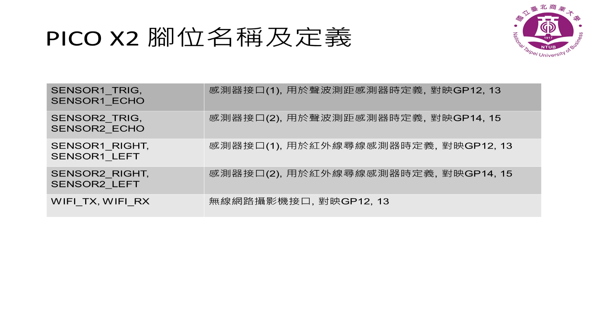
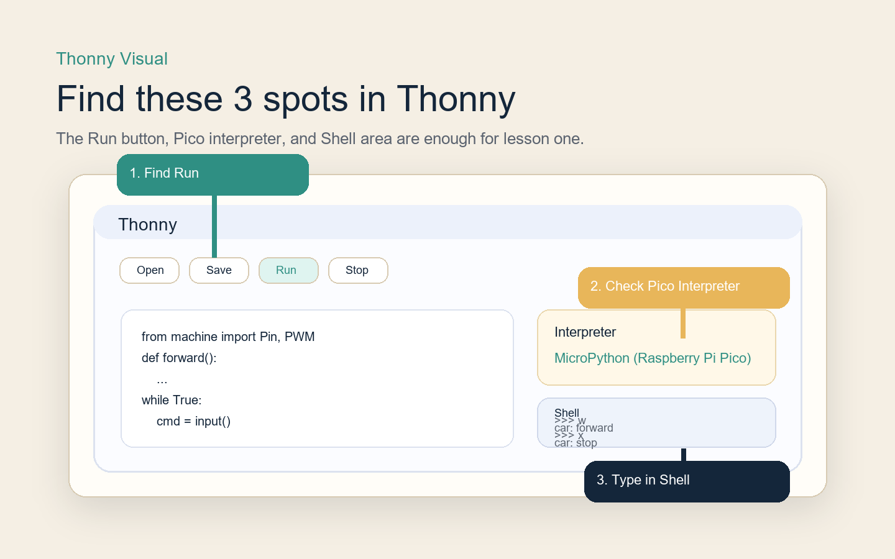
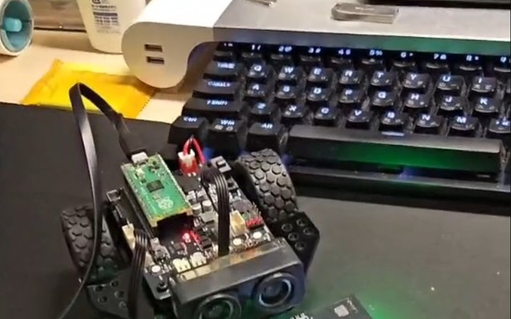
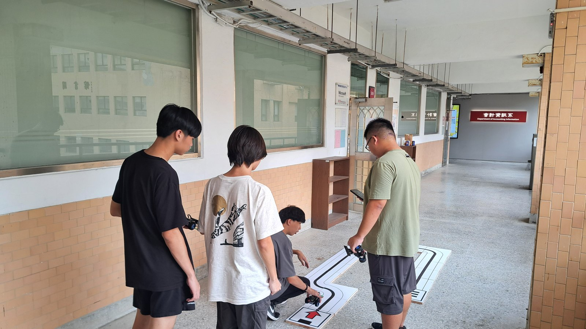

前方兩個圓形感測頭，就是這個主題要先認識的超音波距離感測器。
Topic 2
這是 `Boot Camp` 之後的第二個主題。這一頁先不急著做循跡，而是先讓學生學會 「讀距離」、「看數值變化」，再用 `if / elif / else` 讓 RGB LED 對距離做出反應。
前方兩個圓形感測頭，就是這個主題要先認識的超音波距離感測器。
Topic Route
這個主題的重點不是一次做很多功能，而是先把「感測器讀值」和「條件反應」建立起來。
先看小車前方的超音波距離感測器，再知道這次主題要讀的是「距離」。
先不用判斷距離，讓學生先看到 RGB LED 可以正常亮起來，建立成功感。

開始使用 `sensor.ping()`，並在 Thonny Shell 看見 `distance = ... cm` 的變化。

用三段距離區間控制紅、藍、綠三種燈號，讓學生理解感測器與條件判斷如何結合。

Two Programs
第二主題建議先讓學生看到燈號反應，再帶進距離讀值與條件判斷。這樣學習節奏會比較穩。
Main Program
這一份程式會重複量測距離，並用 `if / elif / else` 控制 RGB 顏色。可直接複製後到 Thonny 測試。
載入中...Code Walkthrough
學生先看功能，老師再補結構。這樣比較容易把感測器、數值和條件判斷接起來。
先認識 `RUS04(sensor_pin=15, rgb_pin=14)`，知道這份程式先建立了一個距離感測器和 RGB LED。
重點先放在 `dist = sensor.ping()`，讓學生知道這一行是在讀目前量到的距離。
這一段把距離分成三區：近、中、遠，並分別對應紅、藍、綠三種燈號。
最適合的練習是把 `10` 或 `20` 改掉，或改顏色順序，再觀察結果是不是跟預期一樣。
What Comes Next
當學生已經能理解「感測器讀值 -> 條件判斷 -> 小車反應」，就可以把這個邏輯帶進下一個主題。

下一個主題將會把感測器的輸入，進一步轉成循跡控制，讓小車能跟著路線前進。